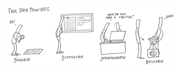

De FAIR data principes

Naast de FAST-principes wordt ook vaak nog een afkorting gebruikt die specifiek gericht is op het gebruik van data: FAIR data. FAIR data zijn data die voldoen aan principes van vindbaarheid (findability), toegankelijkheid (accessibility), interoperabiliteit (interoperability) en herbruikbaarheid (reusability). In eerste instantie gaat het daarbij om wetenschappelijke data, waarbij de nadruk ligt op machine-actionability: het vermogen van computersystemen om gegevens te vinden, toegang te krijgen, samen te werken en te hergebruiken zonder of met minimale menselijke tussenkomst. De vier principes van FAIR data zijn elk weer onderverdeeld in een aantal uitgangspunten:
Vindbaarheid (findability)
Vindbaarheid van data gaat over het principe dat metadata – gegevens die de karakteristieken van bepaalde gegevens beschrijven: data over data – en data gemakkelijk vindbaar moet zijn voor zowel mensen als computers. Goede metadata zijn essentieel voor automatische detectie van datasets en services. Stel je eens voor dat een data scientist van een winkelketen een analyse wil maken van de klantdata om te ontdekken hoe vaste klanten vaker een specifieke, geïndividualiseerde aanbieding kan worden gedaan. Maar zij kan in het databestand met klantgegevens eigenlijk niet goed kan identificeren wat nou de aankopen van klanten zijn. Dan wordt zo’n onderzoek moeilijk. Wanneer vooraf bij het ontwerpen van de klantdataset duidelijk in de metadata was aangegeven wat aankopen zijn dan zou dat veel extra werk hebben gescheeld.
Vragen
- Welke van de volgende gegevens zou je als metadata mogen beschouwen?
- Het bestandsformaat van een databestand.
- De naam van een databestand.
- Het moment van creatie van een databestand.
- De naam van een klant in een databestand met klantaankopen.
antwoord
-
a, b en c zijn goed. d is fout.
- Bezoek de volgende tabel over het VO-onderwijs in Nederland:CBS Statline
- Geef de metadata over geslacht, migratieachtergrond en havo leerjaar 3-5.
- Wat zijn de bronnen waarop deze tabel is gebaseerd?
antwoord
- Om deze metadata te vinden beweeg je je muis over de kolomtitels of druk je op de knop I.
-
geslacht: inclusief leerlingen waarvan het geslacht onbekend is migratieachtergrond: Kenmerk dat weergeeft met welk land een persoon verbonden is op basis van het geboorteland van de ouders of van zichzelf. Inclusief deelnemers met een onbekende migratieachtergrond. havo leerjaar 3-5: Hoger algemeen voortgezet onderwijs (havo) inclusief Engelse Stroom.
- Gebruikte databron(nen):
- Schooljaren 2003/'04 tot en met 2004/'05: Onderwijsnummerbestand Voortgezet Onderwijs (BRON-vo), Dienst Uitvoering Onderwijs (DUO)/CBS én leerlingtellingen vmbo landbouwonderwijs, Ministerie van Economische Zaken.
- Schooljaar 2005/'06: Onderwijsnummerbestand Voortgezet Onderwijs (BRON-vo), Dienst Uitvoering Onderwijs (DUO)/CBS.
- Vanaf 2006/'07: Eéncijferbestand Voortgezet Onderwijs, Dienst Uitvoering Onderwijs (DUO)/CBS
- Stelsel van Sociaal-statistische Bestanden (SSB), CBS.
Toegankelijkheid (accessibility)
Wanneer een gebruiker data heeft gevonden, dan wordt het belangrijk hoe die data kunnen worden geraadpleegd, eventueel inclusief authenticatie en autorisatie ervan. Bedenk maar eens hoe moeilijk het wordt om de klantaankopen uit het bovenstaande voorbeeld te analyseren wanneer het bestand is beveiligd met een wachtwoord dat alleen een medewerker van een ICT-bedrijf kent dat al twee jaar geen diensten meer aan de winkelketen levert.
Vragen
- Welke voorbeelden in de onderstaande lijst zijn goede voorbeelden van data accessibility?
- Het bouwen van een dashboard dat gegevens uit verschillende tabellen in een database haalt, kan alleen worden voltooid door een teamlid dat weet hoe een database te doorzoeken met behulp van SQL of een andere gespecialiseerde querytaal.
- Het bouwen van een dashboard dat gegevens uit verschillende tabellen in een database haalt, kan alleen worden voltooid wanneer er formele toestemming is van de eigenaar van de data om die te mogen gebruiken.
- Het bouwen van een dashboard dat gegevens uit verschillende tabellen in een database haalt, kan alleen worden voltooid wanneer alle data is geprogrammeerd in dezelfde programmeertaal.
antwoord
-
a en b zijn juist. c is geen goed voorbeeld van data accessability, maar gaat over interoperabiliteit.
- Één van de bronnen waarop de tabel over het VO onderwijs in Nederland is het Eéncijferbestand Voortgezet Onderwijs, Dienst Uitvoering Onderwijs (DUO)/CBS. Een korte zoektocht op het internet brengt je naar de open data site van DUO
- Doe deze zoektocht ook zelf.
- Ga op de site van DUO opzoek naar het aantal leerlingen op jouw school in de afdeling waar je nu zit in het vorige schooljaar. (b.v. havo lj 4-5 Natuur en Techniek of vwo lj 4-6 Natuur en Gezondheid).
- In welke mate voldoet de gevonden data aan vindbaarheid en toegankelijkheid?
- Vind je in dit bestand alle informatie nodig om de CBS tabel te vormen?
antwoord
-
- ...
- Binnen opendata kies je voor Databestanden → Voortgezet onderwijs → Leerlingen → Leerlingen per vestiging naar onderwijstype, sector, afdeling, opleiding. Kies daar het bovenste Excel bestand en ga op zoek naar de gegevens van jouw school.
- Vanuit de CBS tabel was niet direct een link naar de data, dat bemoeilijkt de vindbaarheid. De toegankelijkheid bij zowel het CBS als DUO is open, er is geen authenticatie en autorisatie aanwezig.
- Er zijn geen gegevens over migratieachtergrond aanwezig.
Interoperabiliteit (interoperability)
Je moet data samen met andere data kunnen gebruiken: gegevens moeten geschikt zijn voor het samenwerken met applicaties of workflows voor analyse, opslag en verwerking. Om dat mogelijk te maken, moeten data gebruikmaken van een formele, toegankelijke, gedeelde en breed toepasbare taal voor kennisrepresentatie. Stel je eens voor dat het programma waarmee het databestand met klantaankopen kan worden uitgelezen nu ook nog eens geprogrammeerd is in taal die niemand, behalve het oorspronkelijke ICT-bedrijf, nog kan lezen en schrijven.
Vragen
- Welke voorbeelden in de onderstaande lijst zijn goede voorbeelden van interoperabiliteit van data?
- De interne data-architectuur van een ziekenhuis en een huisartsenpraktijk is goed ingericht, waardoor deze twee zelfstandig opererende organisaties goed kunnen samenwerken.
- Een dierenartspraktijk heeft haar hrm-data zo ingericht dat zij zonder problemen data over medewerkers kan delen met een huisartsenpraktijk.
- De bedrijfsprocessen van een metaalfabriek en een toeleveringsbedrijf zijn zo op elkaar afgestemd dat zij onderling zonder problemen data over het productieproces kunnen delen.
antwoord
- a. en c. zijn goede voorbeelden van interoperabiliteit, b.v. overdracht van gegevens van patiënten in a. gaat dan goed en bij c. kan het toeleveringsbedrijf de voorraadbeheer afstemmen op de voorraad van de fabriek. Voorbeeld b. is geen goed voorbeeld omdat het delen van hrm-data van medewerkers in dit geval niet noodzakelijk (en wellicht zelfs niet wenselijk) is.
- Je hebt het databestand bij DUO opgehaald. Daar staat niets in over de migratieachtergrond. Die informatie staat waarschijnlijk in de bron Stelsel van Sociaal-statistische Bestanden.
- Wat is er minimaal nodig om deze koppeling te maken?
- Waarom zal je als buitenstaander niet alle gegevens over een leerling kunnen vinden?
- Zou je toegang tot de individuele gegevens kunnen krijgen?
antwoord
- In de tabel bij het CBS is er een uitsplitsing op migratieachtergrond aanwezig.
- Dus of er moet een uitsplitsing aanwezig zijn per school naar migratieachtergrond in de DUO bestanden of het CBS moet toegang hebben tot alle gegevens van alle leerlingen via DUO en van alle leerlingen via de bron Stelsel van Sociaal-statistische Bestanden waaruit de migratieachtergrond wordt geleverd. Voor geautomatiseerde verwerking is het dus nodig dat de data van deze bestanden overeenkomstige metadata hebben.
- Vanwege onze privacy wetgeving mag niet iedereen individuele gegevens bekijken.
- In de privacy statemen t van het CBS staan onder meer:
"Het CBS gebruikt de gegevens alléén voor statistisch en wetenschappelijk doel. Gebruik voor fiscale, administratieve, controle en gerechtelijke doeleinden is wettelijk uitgesloten. Ook gebruiken we de gegevens niet voor marketing."
en
"Ook worden persoonsgegevens verwerkt bij wetenschappelijke studies van derden."
Geautoriseerde medewerkers en geautoriseerde onderzoekers kunnen dus toegang krijgen tot individuele gegevens.
Herbruikbaarheid (reusability)
Het laatste principe van FAIR data gaat over de (her)bruikbaarheid van data. Data en metadata moeten om de herbruikbaarheid ervan te optimaliseren, goed worden beschreven met meerdere relevante attributen. Op die manier is data in verschillende omstandigheden en systemen mogelijk. Kijk maar eens naar het voorbeeld van de klantaankopen hierboven; stel je voor dat een andere data scientist een jaar later de klantaankopen wil hergebruiken in een ander onderzoek, dan zou het goed zijn wanneer de informatie over het bestand (de metadata) inmiddels is bijgewerkt zodat de problemen van een jaar eerder niet opnieuw optreden.
Vragen
- De overheid verzamelt van oudsher op reguliere basis data over personen, bedrijven, instellingen, markten, wegen, natuur, emissies, woningen, et cetera. We noemen dit publieke data. Het CBS is daarin een belangrijke organisatie. Welke van de volgende beweringen over het belang van hergebruik van publieke data zijn juist?
- Voor wetenschappers zijn publieke data van waarde omdat ze vaak een grote populatie en/of een lang tijdsbestek bestrijken, en doorgaans valt niemand buiten de populatie van overheidsadministraties.
- Voor bedrijven zijn publieke data belangrijk omdat ze daarmee een betrouwbare database van potentiële klanten voor hun producten en diensten kunnen opbouwen. Iedereen zit immers in die publieke data.
- Voor overheden zijn publieke data een potentiële bron van kennis. Kennis die licht werpt op het effect van hun beleid, en hen helpt om complexe taken uit te voeren. Zo’n complexe taak is bijvoorbeeld het bewaken van waarden als veiligheid, privacy, zelfbeschikking, solidariteit en eerlijke concurrentie.
antwoord
- a en c zijn goede redenen waarom hergebruik van publieke data belangrijk is. b is een slecht voorbeeld omdat publieke data geen persoonsgegevens bevatten die door bedrijven gebruikt kan en mag worden.
We zijn aan het einde gekomen van de introductie van de ethische principes waaraan AI-systemen en meer algemeen systemen die zijn gebaseerd op persoonlijke gegevens aan zouden moeten voldoen. Dat niet alle systemen aan deze principes voldoen is een zorg voor de samenleving en dus ook voor de politiek. Het is niet altijd makkelijk om aan alle principes te voldoen. In de verdieping Ethiek en AI kun je zelf aan de slag gaan met het analyseren van AI-systemen in relatie tot de principes FAST en FAIR.